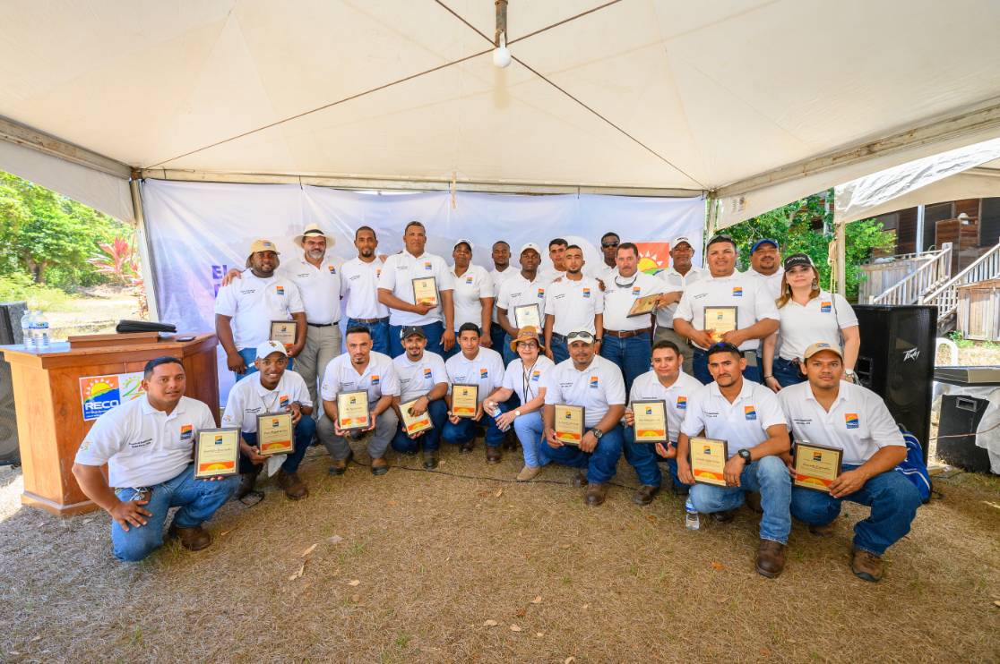

QUIENES SOMOS
Con más de 29 años de servicio en la isla, RECO, avanza con una generación de
energía limpia contribuyendo con la protección del medio ambiente
y aportando con un servicio de calidad a los usuarios de la isla de Roatán.
nuestro odjetivo es poder suministrar de energia a toda la isla de una manera
eficiente y segura llegando hasta los lugares mas alejados meta que nos enorgullese
decir estamos alcansando con nuestra presensia en practicamente toda la isla
y siempre proporcioando apoyo a las comunidades y colonias nacientes demostrando
nuestro interes en servir al pueblo isleño.
Pero nuestro empeño no solo es para con nuestros clientes sino tambien con nuestros empleados con los cuales mantenemos una estrecha relacion de cariño y respeto
y no solo con los ingenieros y licensiados pues creemos que todos nuestros empleados desde los encargados de limpiesa seguridad hasta los gerentes cumplen una funcian
vital en nuestra empresa sin la cual no podria funcionar